|
Research
My research focuses on evaluating and improving language models, particularly in long-context scenarios. More specifically, my current research focuses on:
• How faithfully LLM generate content from long inputs, and how to verify it
• Understanding and optimizing the impact of data on long-context reasoning
|
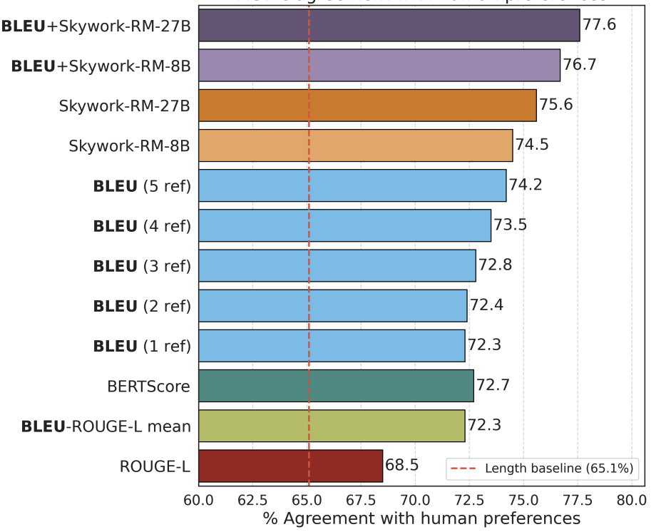 |
BLEUBERI: BLEU is a surprisingly effective reward for instruction following
Yapei Chang,
Yekyung Kim,
Michael Krumdick,
Amir Zadeh,
Chuan Li,
Chris Tanner,
Mohit Iyyer
arXiv 2025
Code
|
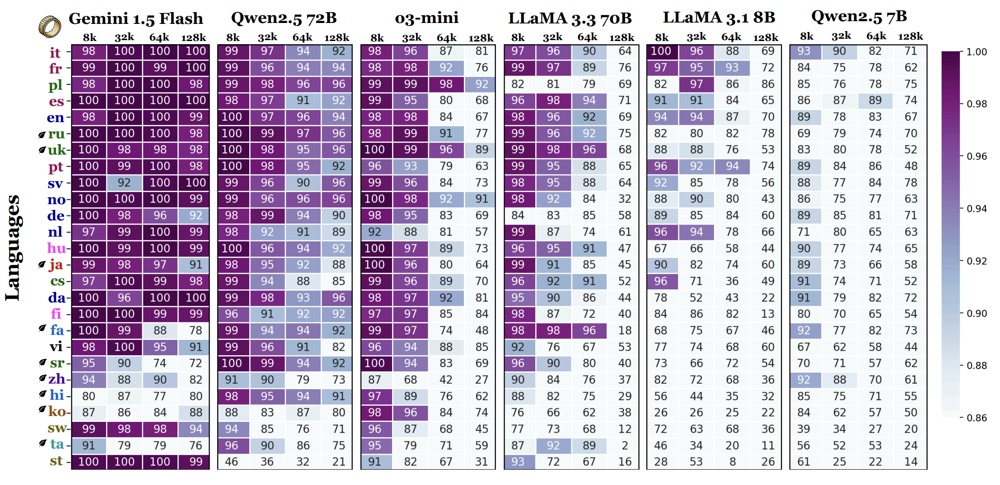 |
One ruler to measure them all: Benchmarking multilingual long-context language models
Yekyung Kim,
Jenna Russell,
Marzena Karpinska,
Mohit Iyyer
arXiv 2025
Code
|
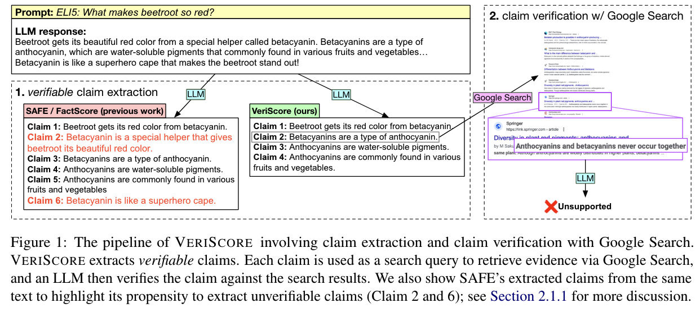 |
VERISCORE: Evaluating the Factuality of Verifiable Claims in Long-form Text Generation
Yixiao Song,
Yekyung Kim,
Mohit Iyyer
Accepted by EMNLP Findings 2024
Code
|
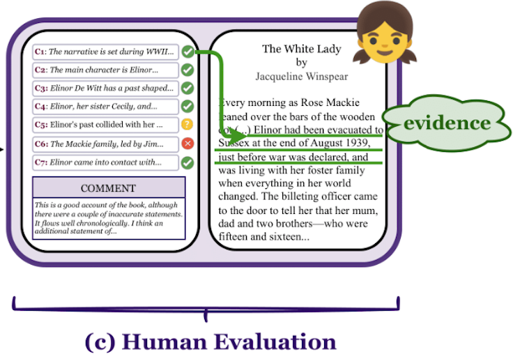 |
FABLES: Evaluating Faithfulness and Content Selection in Book-length Summarization
Yekyung Kim,
Yapei Chang,
Marzena Karpinska,
Aparna Garimella,
Varun Manjunatha,
Kyle Lo,
Tanya Goyal,
Mohit Iyyer
COLM 2024
Dataset + Code
|
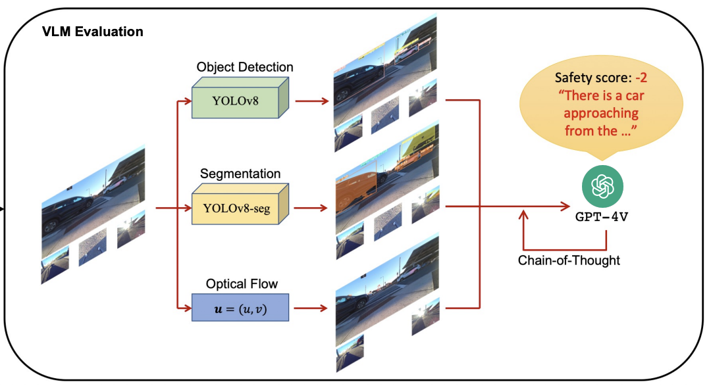 |
Is it safe to cross? Interpretable Risk Assessment with GPT-4V for Safety-Aware Street Crossing
Hochul Hwang,
Sunjae Kwon,
Yekyung Kim,
Donghyun Kim
21st International Conference on Ubiquitous Robots
|
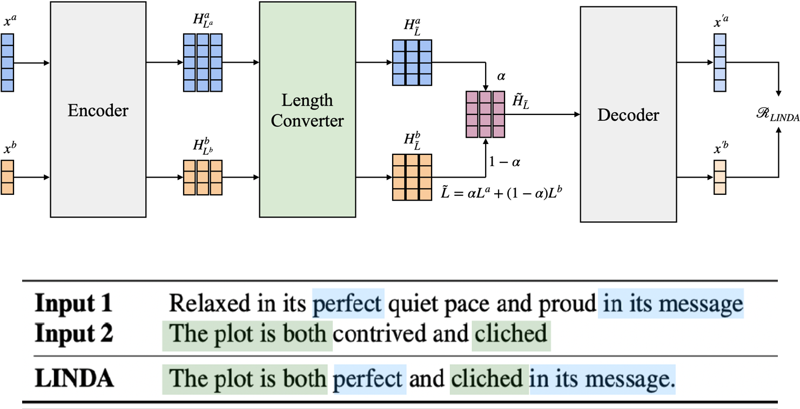 |
LINDA: Unsupervised Learning to Interpolate in Natural Language Processing
Yekyung Kim,
Seohyeong Jeong,
Kyunghyun Cho
arXiv
|
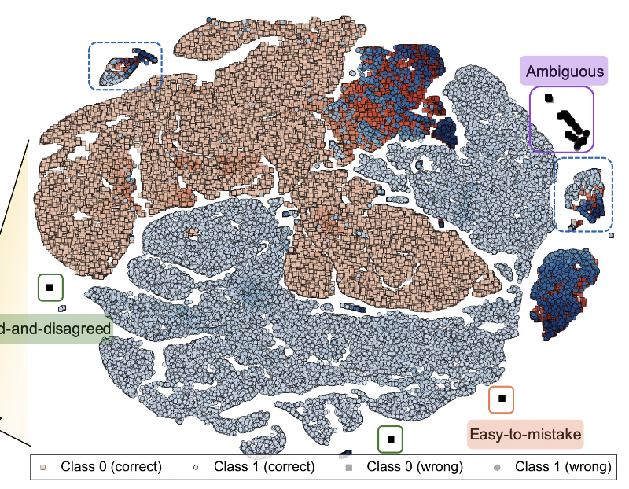 |
A Universal Framework for Dataset Characterization with Multidimensional Meta-information
Jaehyung Kim
Yekyung Kim,
Karin Johanna Denton de Langis,
Jinwoo Shin,
Dongyeop Kang
ACL 2023
code
|
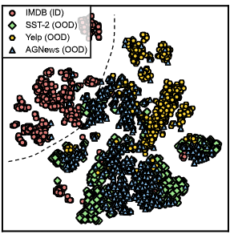 |
Meta-Crafting: Improved Detection of Out-of-distributed Texts via Crafting Metadata Space
Ryan Koo,
Yekyung Kim,
Dongyeop Kang,
Jaehyung Kim
AAAI 2024 Student Abstract and Poster Program
|
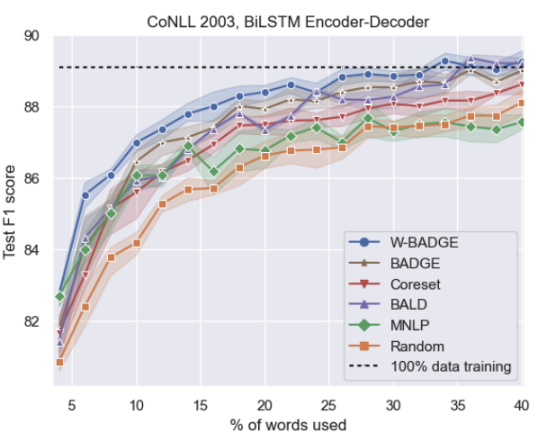 |
Deep Active Learning for Sequence Labeling Based on Diversity and Uncertainty in Gradient
Yekyung Kim
Workshop on Life-long Learning for Spoken Language Systems at AACL, 2021
|
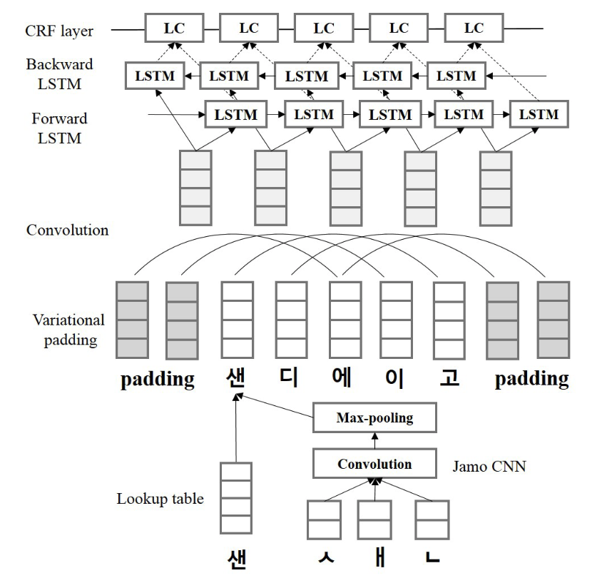 |
Learning Sub-Character level representation forKorean Named Entity Recognition
Yejin Kim,
Yekyung Kim (equal contributions)
The International FLAIRS Conference Proceedings , 2020
|
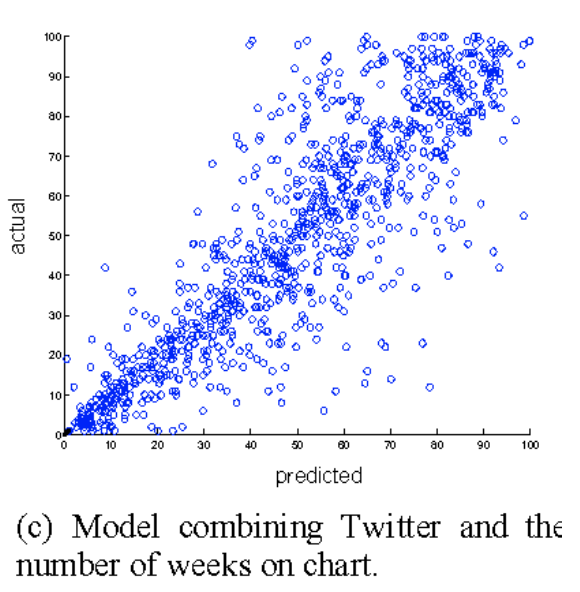 |
#Nowplaying the Future Billboard: Mining Music Listening Behaviors of Twitter Users for Hit Song Prediction
Yekyung Kim,
Bongwon Suh,
Kyogu Lee
Workshop on Social Media Retrieval and Analysis (SoMeRA) at SIGIR , 2014
|
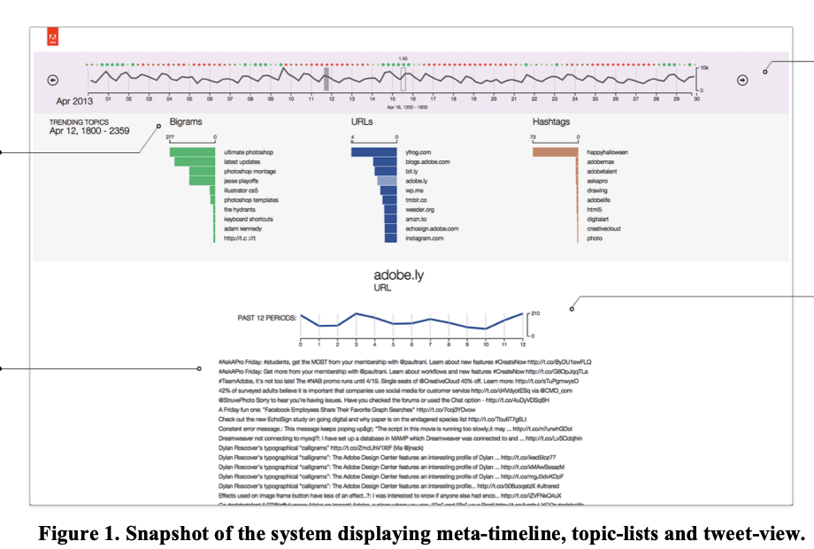 |
A Visual Analytics Approach to Summarizing Tweets
Ramik Sadana,
Yekyung Kim ,
Bongwon Suh,
Eunyee Koh
Industry day at SIGIR , 2014
|
|
{kind=link}